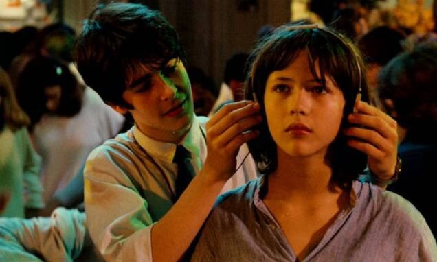

“电影感”在行摄江湖里是一种很受欢迎的feel，充满电影感的照片不仅在视觉上给人一种逼格很高的感觉，也能通过照片本身的色调、张力把人带到故事中去
但是...如何拍出一张充满“电影感”的照片？
把照片裁成16:9？加个黑框？还是直接在照片底部加上台词？当然没有那么简单
想熟练掌握“电影感”首先要成为一个阅片无数的老司机，所以今天就来带大家看看片子，从电影中获得拍摄灵感~
构图
构图一直是让很多人很烦恼的一件事，其实放轻松，构图其实没有我们想象中那么难，首先来看看各位导演们都喜欢采用什么构图方式
1.圆形构图
说到圆形构图，相信很多同志脑海里第一反应是冯导去年的电影《我不是潘金莲》
圆形构图最大的好处是突出主体，让人产生一种置身事外的感觉

圆形构图是很多电影惯用的构图法，把主体放到一个圈里，更能增加故事性，观众能很明显的感觉到自己和那个圈里的世界不是一个维度的，而这正是“电影感”的表现方式
2.中心构图
中心构图是一种最常见的构图方式，因为它最保守、最不容易出错的一种构图方式

《美丽人生》中的经典一幕让人印象深刻，整个画面以儿子为中心，男女主角分别站在左右两侧，很好的突出了一家人其乐融融的状态，可惜电影在这里就要从喜剧转为悲剧了
《Lolita》(1997)
拍照时如果不知道该把人或物置于何处，不妨试试最简单也最安全的中心构图法，出错的概率也会小一点
3.对称构图
说到对称构图不得不提到的一部电影就是《布达佩斯大饭店》


不管是建筑还是人，都有多处用到对称构图，这部电影简直是强迫症福利，对称式构图的优点是画面平衡稳定，而不足之处则是会让整体画面略显呆板，我们平时在拍一些建筑和风景的时候多采用对称式构图还是不错的
色彩
比起构图，色彩更能直观的表达情感、渲染情绪。一部电影是否出彩，色彩也占很大比重，照片同理
1.突出主色调
《大鱼》里明亮的黄色花海，《触不到的恋人》里忧郁的紫色天空，《花样年华》里非常王家卫式的暗红色调，这些颜色除了配合电影整体基调，推动情绪外，也是让观众印象深刻的记忆点
2.大胆撞色
故事性
电影通常是故事的载体，充满“电影感”的照片必然是非常有画面感，有故事性的。简单说，想让照片有“电影感”就得让照片和电影一样开口讲故事
那什么样的照片才有画面感、故事性呢？就拿下面几张图来举例子好了~
上面这隔着屏幕都能感觉到左边眼镜叔内心的绝望，有没有冲击力，有没有戏剧性、故事性？
这张有没有画面感，够不够故事性？我都看的心惊胆战，生怕下一秒冰淇淋掉地上

没错，这就是传说中的“故事性”！虽然生活不是电影，但我们并不缺乏充满故事性的瞬间，只要你有一双善于发现的大眼睛！